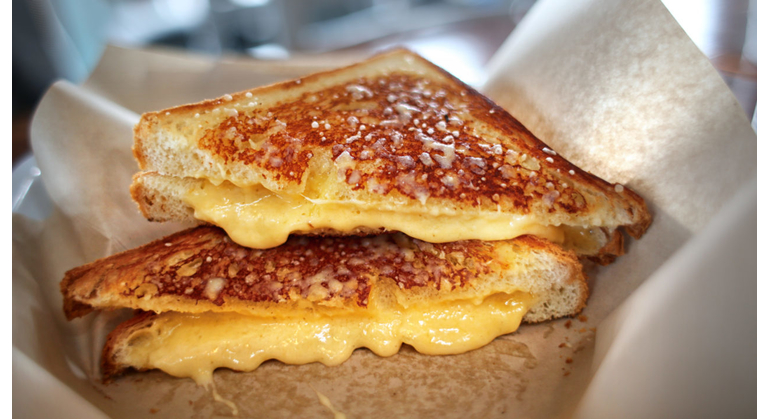

Grilled Cheese

Description
Nothing is more comforting than a hot, melty grilled cheese sandwich. The best grilled cheese always starts with a sturdy bread, lots of cheese and a smear of butter on the outside!
Ingredients
- 4 slices white bread
- 3 tablespoons butter divided
- 2 slices cheddar cheese
Steps
- Preheat skillet over medium heat. Generously butter one side of a slice of bread. Place bread butter-side-down onto skillet bottom and add 1 slice of cheese.
- Butter a second slice of bread on one side and place butter-side-up on top of sandwich.
- Grill until lightly browned and flip over; continue grilling until cheese is melted.
- Repeat with remaining 2 slices of bread, butter and slice of cheese.